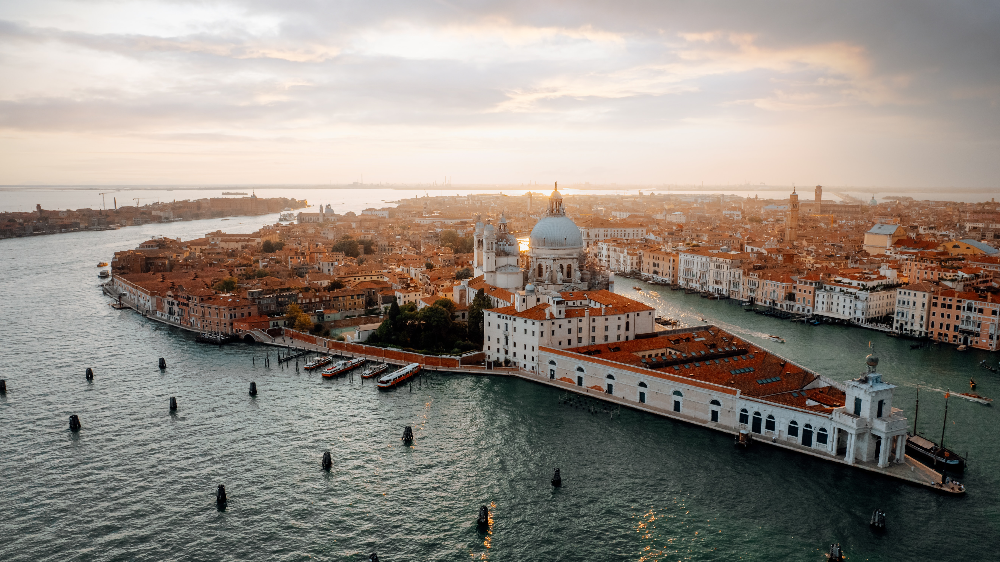
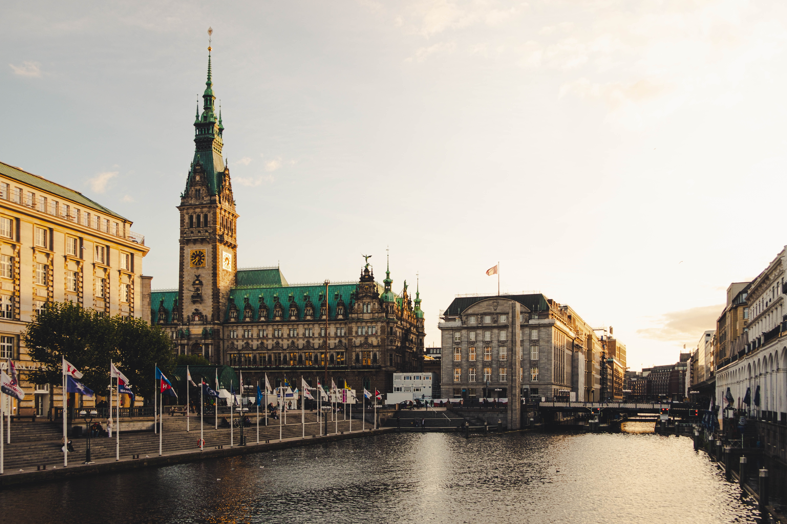
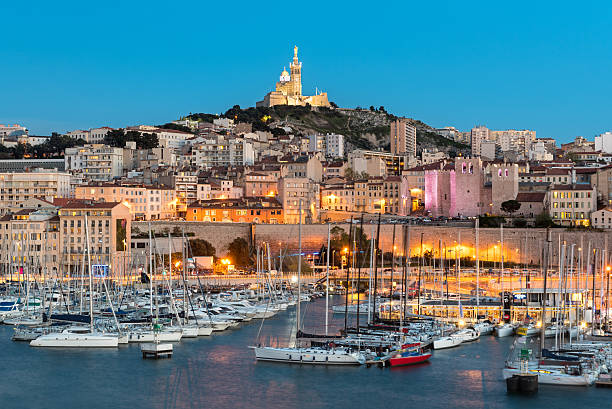

Home
Asia
America
Europe
Discover Europe's Hidden Treasures:
Italy, Germany, and France
ITALY

ROME
Rome is often referred to as the City of Seven Hills due to its geographic location, and also as the "Eternal City". Rome is generally considered to be the "cradle of Western
civilization and Christian culture", and the centre of the Catholic Church.

VENICE
Venice, known also as the “City of Canals,” “The Floating City,” and “Serenissima,” is arguably one of Italy's most picturesque cities. With its winding canals,
striking architecture, and beautiful bridges, Venice is a popular destination for travel.

AMALFI COAST
Italy's Amalfi Coast boasts a classic Mediterranean landscape, a sensual blend of both natural and cultural wonders. The breathtaking terrain includes dramatic coastline
topography scattered with terraced vineyards, orchards, and pastures—often with enchanting views of the vibrant waters below.
GERMANY

BERLIN
Berlin, the capital city of Germany, is renowned for its exceptional range of landmarks, vibrant cultural scene and way of life that's somehow all go yet relaxe

HAMBURG
Hamburg, city and Land (state), located on the Elbe River in northern Germany. It is the country's largest port and commercial centre.

HEIDELBERG
Heidelberg is famous for being a college town in southwest Germany, with prestigious universities and romantic cityscape.
It sits on the banks of the Neckar River and is surrounded by forested hills.
FRANCE

EIFFEL TOWER
The Eiffel Tower is a famous French landmark. It is a wrought-iron tower known all over the world for its beautiful architecture and cultural significance.

MARSEILLE
Marseille is one of the major ports of the Mediterranean Sea. It is situated on the Mediterranean's Gulf of Lion within a semicircle of limestone hills.

STRASBOURG
Strasbourg is the capital of the Alsace region in eastern France and lies on the border with Germany, giving it a unique flavour of both countries.